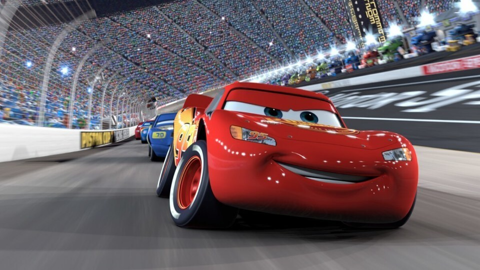
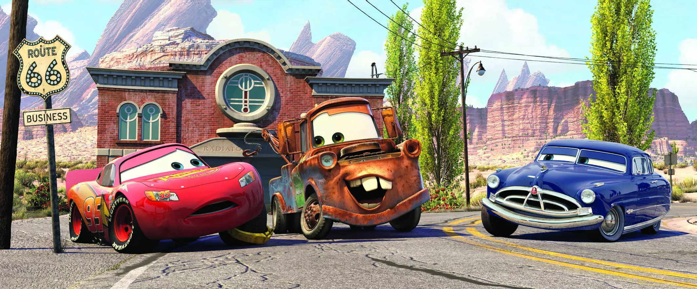

Cars és una pel·lícula d'animació de Disney-Pixar que segueix Lightning McQueen, un cotxe de curses que, després d'un accident, acaba en un petit poble anomenat Radiator Springs. Allà coneix nous amics i aprèn a valorar la companyonia i els valors per sobre de guanyar a les curses.
Curiositat: En la pel·lícula Cars, els personatges principals, com a Rayo McQueen, estan basats en cotxes reals, però també en personatges de la cultura popular. Per exemple, Rayo McQueen té l'esperit d'un cotxe de carreres, però el seu disseny està influenciat per cotxes com el Chevrolet Corvette i el Ford GT40.
Personatge
Cotxe en la vida real
Rayo McQueen
Chevrolet Corvette
Luigi
Fiat 500
Mate
Chevrolet Tow Truck
Sally
Porsche 911
Personatges principals
Lightning McQueen
Un joven y ambicioso coche de carreras que sueña con ganar la Copa Pistón. Es muy rápido y competitivo, pero también un poco arrogante al principio.
Mate
Una vieja grúa oxidada y un poco torpe, pero con un corazón enorme. Es el mejor amigo de Rayo y le enseña el verdadero significado de la amistad.
Sally
Un elegante Porsche 911 que es la abogada de Radiator Springs. Es inteligente, amable y tiene un gran sentido del humor.
Doc Hudson
Un legendario coche de carreras retirado que vive en Radiator Springs. Es sabio y experimentado, y ayuda a Rayo a descubrir su verdadero potencial.
Presentació de la Pel·lícula
Cars és una pel·lícula d'animació de Disney-Pixar que segueix Lightning McQueen, un cotxe de curses que, després d'un accident, acaba en un petit poble anomenat Radiator Springs. Allà coneix nous amics i aprèn a valorar la companyonia i els valors per sobre de guanyar a les curses.
Director/a: John Lasseter
Any d'estrena: 2006
Durada: 117 min
Gènere: Animació, Aventura, Comèdia
Classificació: Apta per a tots els públics
Actors Principals
Lightning McQueen: Owen Wilson
Marley & Me (2008)
Zoolander (2001)
The Royal Tenenbaums (2001)
Mate: Larry the Cable Guy
Delta Farce (2007)
Blue Collar Comedy Tour: The Movie (2003)
Cars 2 (2011)
Sally Carrera: Bonnie Hunt
Jumanji (1995)
Cheaper by the Dozen (2003)
Beethoven (1992)
Doc Hudson: Paul Newman
Butch Cassidy and the Sundance Kid (1969)
The Sting (1973)
Road to Perdition (2002)
Cinemes Recomanables
Donat que éss una pel·lícula del 2006 la pel·lícula actualment no aquesta disponible en cinemes però sí en plataformes de streaming com Disney +
Però aquí et deixo alguns cinemes pròxims on es va poder veure la pel·lícula
OCINE El VendrellEl Vendrell
MCB CinemasCalafell
Cines KinepolisCentro Comercial Splau
Fotografies i Trailer


Opinió
Opinió del crític: Cars és una pel·lícula una mica antiga del 2006 que dona gust veure-la el dia d'avui, crec que pot arribar a ensenyar valors molt importants als més petits i al seu torn entretenir-los no sols amb aquesta pel·lícula sinó amb les 2 següents. La recomano molt.